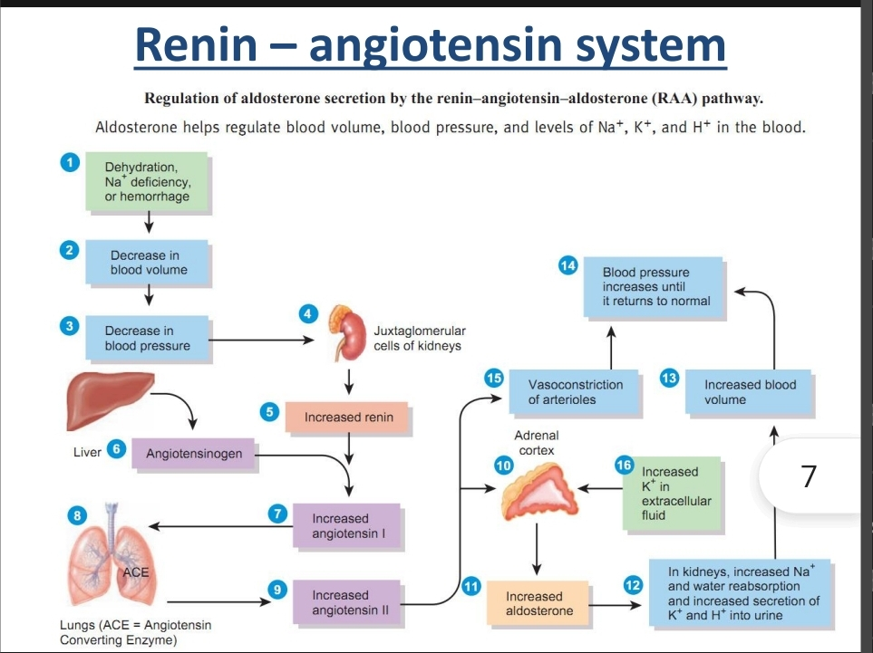
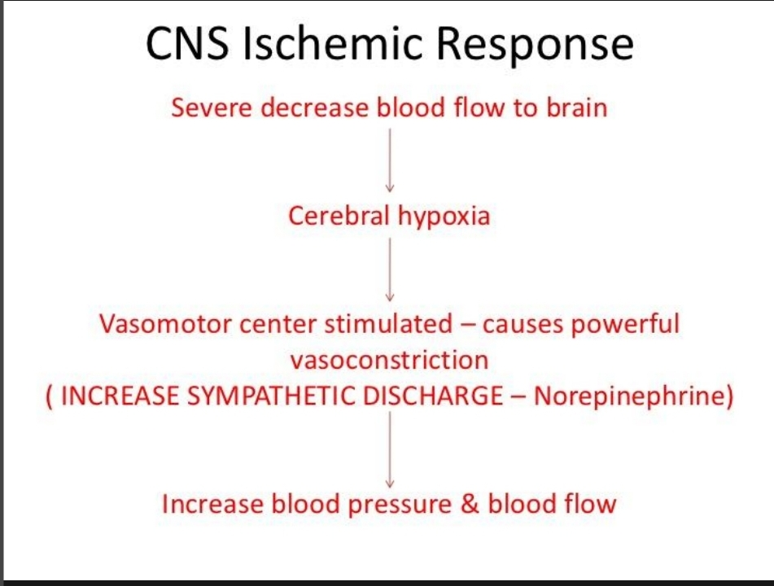
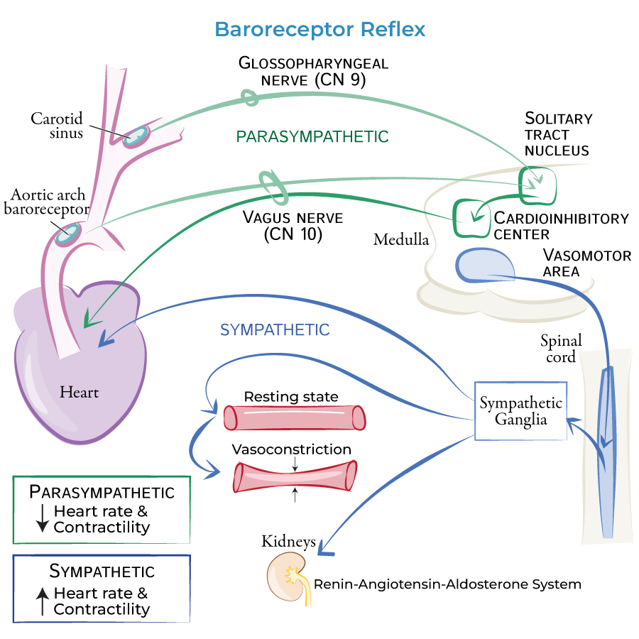

The Renin-Angiotensin-Aldosterone (RAA) system is a vital hormone system that regulates blood pressure and fluid balance. Key components: Renin (released by the kidneys), Angiotensinogen (liver), ACE (lungs), Angiotensin II, and Aldosterone (adrenal cortex). Significance: When blood pressure or volume drops, renin converts angiotensinogen to angiotensin I, which ACE converts to angiotensin II. Angiotensin II is a potent vasoconstrictor (raising BP) and stimulates the release of aldosterone, which promotes sodium and water reabsorption in the kidneys to increase blood volume.

The CNS ischemic response is a powerful emergency reflex. When blood flow to the brain's vasomotor center is severely restricted (ischemia), there is a localized buildup of carbon dioxide and lactic acid. This directly and intensely stimulates the sympathetic vasomotor neurons. Mechanism: It causes profound systemic vasoconstriction, drastically elevating mean arterial blood pressure. Contribution to health: It acts as a "last-ditch" survival mechanism to force blood flow back into the brain to preserve vital neural tissue when systemic blood pressure falls dangerously low or intracranial pressure rises.

Standing abruptly causes blood to pool in the lower extremities due to gravity, reducing venous return and stroke volume, thus dropping blood pressure. Baroreceptor Reflex Processes: The decreased BP reduces the stretch on baroreceptors located in the carotid sinus and aortic arch. These receptors decrease their rate of firing to the cardiovascular center in the medulla oblongata. In response, the medulla decreases parasympathetic (vagal) output and increases sympathetic output. This results in an increased heart rate, stronger myocardial contractility, and widespread vasoconstriction, which rapidly restores blood pressure to normal levels.

During physical activity, Cardiac Output (CO) increases significantly due to sympathetic nervous system activation, which raises both heart rate and stroke volume. Preload increases because the skeletal muscle pump and respiratory pump strongly push blood back to the heart (increased venous return). Afterload generally decreases in the working skeletal muscles due to local metabolic vasodilation, making it easier for the heart to pump blood to those areas. Over time, regular exercise induces physiological hypertrophy of the heart, resulting in a higher resting stroke volume, a lower resting heart rate, and improved endothelial function, vastly reducing the risk of cardiovascular diseases.
Atherosclerosis heavily contributes to hypertension through several mechanisms that increase total peripheral resistance. Endothelial dysfunction: The damaged vascular lining produces less nitric oxide (a potent vasodilator) and more endothelin (a vasoconstrictor), leading to increased resting vascular tone. Atherosclerotic plaques: These physical fatty buildups narrow the arterial lumen, creating direct physical resistance to blood flow. Arterial stiffness: Plaque buildup and calcification cause arteries to lose their elasticity. Stiff arteries cannot effectively expand to accommodate stroke volume during systole, severely elevating systolic blood pressure. Inflammation: Chronic localized inflammation exacerbates endothelial damage and promotes oxidative stress, perpetuating the cycle of arterial stiffening and elevated vascular resistance.